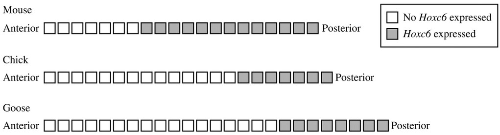

In animals, the hox genes encode a family of transcription factors that are important for proper development of embryonic segments and are widely conserved in organisms. The figure below shows the embryonic segments in which one such gene, Hoxc6, is expressed in the embryo of a mouse, a chick, and a goose. Embryonic segments are counted from the anterior end.
During the formation of vertebrae, the most anterior embryonic segment that expresses Hoxc6 marks the end of the cervical (neck) vertebrae and the beginning of the thoracic (rib) vertebrae. All mammals have seven cervical vertebrae.

Which of the following statements is most likely to be true?